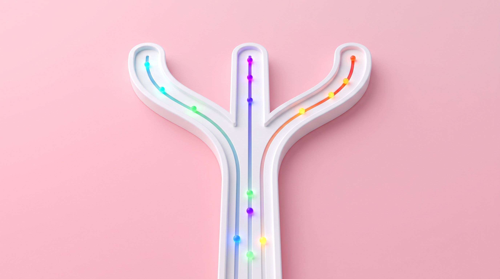
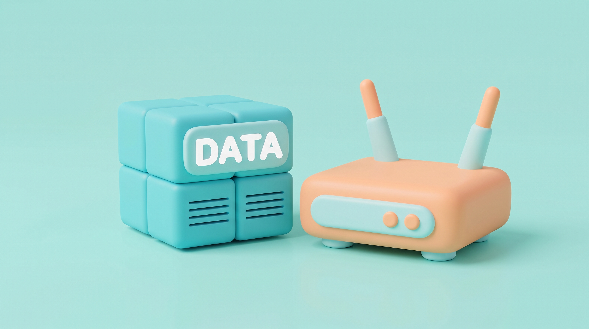

Berpikir Komputasional Algoritma di Balik Rumah Cerdas (IoT)
💡 Panduan Belajar Media Pembelajaran Interaktif (MPI)
🧭 Tombol Navigasi
Kembali ke halaman sampul awal.
Buka peta menu utama untuk memilih topik belajar.
Mundur ke halaman atau aktivitas sebelumnya.
Maju ke halaman atau tantangan berikutnya.
Memulai pengalaman belajar dan membuka menu.
🚀 Alur Pembelajaran
Pelajari Dekomposisi, Abstraksi, Pengenalan Pola, dan Algoritma pada sistem IoT.
Lihat simulasi rumah cerdas dan uji pemahaman komponen sensor & aktuator.
Susun blok logika kondisi (IF-THEN) dan uji coba otomasi lampu, kipas, serta alarm.
Uji kemampuanmu lewat latihan komprehensif dan tuliskan refleksi ide kreatifmu.
🎯 Berdasarkan Capaian Pembelajaran Informatika Fase D (Kurikulum Merdeka), setelah mempelajari media ini kamu diharapkan mampu:


Dekomposisi adalah kemampuan memecah masalah besar/rumit menjadi bagian-bagian kecil yang lebih sederhana agar mudah diselesaikan satu per satu — seperti memotong pizza utuh menjadi irisan kecil!
Contoh Dekomposisi di Kehidupan Siswa SMP
Merapikan Kamar
Pecah jadi langkah berurutan:
- 1 Rapikan sprei & bantal
- 2 Masukkan baju ke keranjang
- 3 Susun buku & sapu lantai
Presentasi Kelompok
Pecah menjadi pembagian tugas:
- 1 Anggota A: Riset materi
- 2 Anggota B: Desain slide
- 3 Anggota C: Juru bicara
Membuat Mading
Pecah pembuatan mading kelas:
- 1 Tulis artikel & berita seru
- 2 Gambar komik & ilustrasi
- 3 Susun tata letak (layout)
Sistem rumah cerdas didekomposisi menjadi 3 bagian utama yang bekerja persis seperti organ tubuh manusia:
1. SENSOR (Indera)
Perangkat INPUT yang merasakan lingkungan:
2. KOMPUTER MINI (Otak)
Unit PROSES (mikrokontroler) yang mengambil keputusan:
3. AKTUATOR (Tangan/Kaki)
Perangkat OUTPUT pelaksana aksi fisik nyata:
Abstraksi adalah kemampuan menyaring informasi — hanya fokus pada data penting yang dibutuhkan dan mengabaikan detail-detail yang tidak relevan!
Contoh Abstraksi di Kehidupan Siswa SMP
Peta Rute Kereta / MRT
Hanya menampilkan jalur & stasiun:
Buku Kontak di HP
Hanya simpan data yang diperlukan:
Formulir Sekolah
Hanya tanyakan data esensial:
Saat merancang lampu cerdas, mikrokontroler membuang ribuan data fisik dan hanya memproses 1 data penentu:
Data yang Diproses Komputer:
Kondisi saat ini GELAP (< 200 Lux) atau TERANG?
Lampu sedang NYALA atau MATI?
Detail yang Dibuang / Tidak Diproses:
Keputusan instan tanpa lag.
Cukup mikrokontroler kecil.
Konsumsi daya sangat minim.
Pengenalan Pola adalah kemampuan menemukan keteraturan atau tren berulang pada suatu kejadian. Dengan memahami pola, kita bisa memprediksi masa depan dan membuat solusi otomatis yang berlaku selamanya!
Contoh Pengenalan Pola di Kehidupan Siswa SMP
Pola Jam Macet Pagi
Setiap 06.30 jalan selalu macet parah.
Solusi: Berangkat 06.15 agar tidak terlambat.
✓ Pola membantu rencana kita!Pola Musim Hujan
Bulan Nov–Feb selalu hujan sore hari.
Solusi: Siapkan payung lipat di dalam tas.
✓ Pola membuat kita selalu siap!Tebak Nada Lagu
Tebak judul lagu dari 3 nada pembuka.
Penyebab: Otak merekam pola melodinya.
✓ Otak alami mengenali pola!Sistem IoT membaca grafik sensor 24 jam untuk mengenali siklus harian berulang:
Pola 1: Siklus Terang-Gelap (Siang-Malam)
Sensor Cahaya (LDR)Pola 2: Siklus Suhu Panas Ruangan
Sensor Suhu (DHT)Algoritma adalah rangkaian langkah instruksi yang jelas, logis, dan terurut untuk menyelesaikan masalah. Jika langkahnya tertukar, hasilnya bisa gagal total!
Contoh Algoritma Berurutan di Kehidupan Kita
Resep Masak Mie
Langkah berurutan:
- 1 Rebus 400ml air mendidih
- 2 Masak mie 3 menit
- 3 Tuang bumbu & aduk di piring
Login WiFi Sekolah
Langkah berurutan:
- 1 Aktifkan Wi-Fi di HP
- 2 Pilih SSID "WiFi_SMPN2"
- 3 Ketik kata sandi & sambung
Komputer mini mengambil keputusan otomatis menggunakan 3 Jenis Logika Kondisional (IF-THEN):
JIKA — MAKA (IF - THEN)
1 syarat terpenuhi ➔ langsung lakukan aksi.
JIKA Sensor Cahaya = GELAP
MAKA Nyalakan Lampu Teras 💡
JIKA — DAN — MAKA (IF - AND - THEN)
Dua syarat SEMUA harus terpenuhi.
JIKA Suhu > 30°C DAN Ada Orang
MAKA Putar Kipas Angin 🌀
JIKA — MAKA — JIKA TIDAK (IF - ELSE)
Aksi alternatif jika syarat utama tidak terpenuhi.
JIKA Kartu Kunci Sah
MAKA Buka Kunci Pintu ✅
JIKA TIDAK Bunyikan Alarm 🚨
Animasi Konsep Smart Home IoT
Saksikan bagaimana sensor mendeteksi perubahan lingkungan, mikrokontroler memproses algoritma kondisi, dan aktuator bergerak otomatis menciptakan rumah pintar hemat energi.
🏠 Jadilah arsitek rumah cerdas! Seret komponen sensor & aktuator yang tepat ke setiap ruangan!
📦 Komponen Tersedia
Tantangan Berpikir Komputasional 4 Tahap Menguasai Fondasi BK
Selesaikan 4 tahap tantangan bertingkat! Setiap tahap melatih 1 fondasi Berpikir Komputasional:
🧩 Dekomposisi → 🔍 Abstraksi → 📈 Pengenalan Pola → ⚡ Algoritma
Skenario: Kamu sedang merancang lampu kamar otomatis. Pilih data yang PENTING untuk sistem ini, dan buang data yang TIDAK PENTING!
Grafik Sensor Cahaya 24 Jam: Perhatikan data di bawah ini. Kapan cahaya mulai gelap (senja) dan kapan mulai terang (fajar)?
Susun blok-blok logika di bawah ini menjadi aturan otomasi yang benar! Seret blok ke slot yang tepat.
Latihan Evaluasi Uji Pemahaman Berpikir Komputasional
Evaluasi ini menguji pemahamanmu secara menyeluruh tentang 4 Fondasi Berpikir Komputasional & Penerapan Logika Rumah Cerdas IoT melalui 5 bagian soal autentik (Total Skor Maksimal: 18 Poin).
Klik istilah di sebelah kiri, lalu klik definisi yang tepat di sebelah kanan untuk menghubungkan. Kamu bisa mengklik kartu/tombol ✕ untuk membatalkan atau mengoreksi pasangan.
Seret kotak-kotak tahapan kerja sistem lampu teras otomatis berikut ke urutan proses yang benar dari awal hingga akhir!
Pilih aturan logika kondisional yang paling hemat energi dan tepat untuk sistem penerangan teras rumah pintar! (Skor benar percobaan pertama = 1 poin)
Tanpa menggunakan sensor.
Hemat energi & adaptif.
Logika terbalik / boros listrik.
Sistem IoT dipecah menjadi Sensor, Mikrokontroler, dan Aktuator, serta hanya memproses data esensial yang relevan.
Mendeteksi siklus harian dan kebiasaan lingkungan untuk memicu otomasi tanpa perlu perintah berulang.
Aturan IF-THEN-ELSE memberi kecerdasan bagi perangkat untuk mengambil keputusan mandiri secara tepat.
💭 Refleksi Siswa: Menurutmu, perangkat atau peralatan apa lagi di rumah atau sekolahmu yang bisa dibuat otomatis menggunakan 4 Fondasi Berpikir Komputasional? Tuliskan idemu di bawah ini:

Ach. Chanifuddin Fanani, S.Pd.

Muhammad Ilyas Sayyid, S.Kom.
🏛️ Penanggung Jawab
✍️ Tim Pengembang & Penyunting
BERPIKIR KOMPUTASIONAL MEMBEKALI GENERASI MUDA MENGUBAH TANTANGAN DUNIA NYATA MENJADI SOLUSI CERDAS DAN INOVATIF
— Bersama Memajukan Pendidikan Informatika Indonesia yang Berdaya Saing —


KEMENTERIAN PENDIDIKAN DASAR DAN MENENGAH
DIREKTORAT JENDERAL PENDIDIKAN ANAK USIA DINI, PENDIDIKAN DASAR, DAN PENDIDIKAN NONFORMAL DAN INFORMAL
DIREKTORAT SEKOLAH MENENGAH PERTAMA